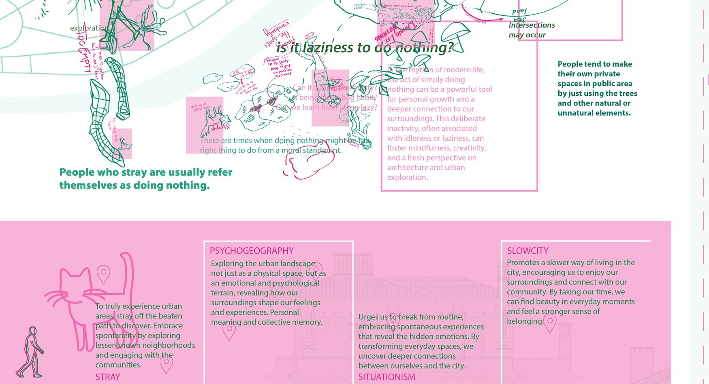

02 — STRAY
"Is doing nothing doing something?" • "Is it laziness to do (nothing)?" • "Is not doing anything even possible?"


To Stray /streɪ/
To wander off the usual path. In a hyper-efficient city governed by productivity, straying invites us to be open to unexpected moments, highlighting the immense richness of unplanned encounters.
The Flâneur & Aimless Observation
The flâneur watches the city closely without a destination, uncovering latent nuances through relaxed observation. Aimless wandering acts as an active form of spatial mindfulness.
Is Doing Nothing Doing Something?
Challenging the moral guilt of idleness. In modern rhythms, deliberate inactivity becomes a radical catalyst for personal contemplation, sensory awareness, and creative renewal.
Cats as Spatial Guides
Cats roam the seaside with complete sensory presence, devoid of agendas. They demonstrate that doing nothing is never a void, but a state of heightened perceptual attunement.
STRAY investigates the boundaries between purposelessness and presence in contemporary urban life. Grounded in 19th-century theories of the Flâneur (Baudelaire, Walter Benjamin), Situationist dérive (Guy Debord’s psychogeography), and the Slow City philosophy, the project questions the utilitarian tyranny of efficiency: “Is doing nothing doing something?†and “Is it laziness to do (nothing)?â€
Situated behind the coastal tree canopy of Moda, Kadıköy, the building acts as an open urban interior where pedestrians naturally drift inward from the seaside promenade. Rather than prescribing circulation, a continuous multi-level ramp weaves through a series of transformative spatial zones. Visitors encounter semi-outdoor frontyards filtered through vibrant magenta mesh lattices, active mark-making surfaces where they leave physical traces and drawings, flexible moveable-wall workshops, culminating in the contemplative sensory silence of The Dark Room.
By treating wandering as an essential spatial methodology rather than a detour, STRAY demonstrates how interior architecture can cultivate moments of collective mindfulness, serendipity, and emotional connection to the city.
STRAY, çaÄŸdaÅŸ kent yaÅŸamında amaçsızlık ile varoluÅŸ arasındaki sınırları araÅŸtıran bir mekânsal sorgulamadır. 19. yüzyılın Flâneur kavramından (Baudelaire, Walter Benjamin), Sitüasyonist dérive (Guy Debord’un psikocoÄŸrafyası) pratiklerinden ve Sakin Åehir (Slow City) felsefesinden beslenen proje, faydacı üretkenlik baskısını sorgular: “Hiçbir ÅŸey yapmamak bir ÅŸey yapmak mıdır?†ve “Aylaklık tembellik midir?â€
Kadıköy Moda Sahili boyunca uzanan ağaç dokusunun arkasında konumlanan yapı, yayaların sahil hattından içeriye kendiliğinden sürüklendiği (straying) bir kentsel iç mekan gibi kurgulanmıştır. Keskin koridorlar yerine, sürekli bir rampa omurgası katlar arasında diyagonal bir yolculuk yaratır. Ziyaretçiler, pembe metal ızgaralarla filtrelenen yarı açık avlulardan, ziyaretçilerin çizimler ve izler bıraktığı etkileşimli yüzeylere, hareketli duvarlarla dönüşen atölyelere ve en üstte duyusal bir içe dönüş sunan Karanlık Oda'ya (The Dark Room) kadar uzanan kesintisiz bir deneyim yaşar.
Aylaklığı bir sapma değil, mekânı keşfetmenin en derin yolu olarak kabul eden STRAY, iç mimarinin kentte nasıl bir duraklama, tesadüf ve duygusal temas alanı üretebileceğini kanıtlar.


DISCONNECTION
Detaching from the prescribed velocity, schedule, and linear paths of the city. Crossing the Moda tree threshold.
DRIFTING (DÉRIVE)
Allowing spatial curiosity and subtle light/shadow conditions to steer movement rather than functional destinations.
CURIOSITY & TRACE
Engaging with rotating tactile surfaces on the ramp, scribbling thoughts, creating physical records of passing presence.
DISCOVERY & STILLNESS
Arriving at The Dark Room; transitioning from outer spatial drift into deep internal mindfulness and sensory pause.
PSYCHOGEOGRAPHY
Exploring the urban landscape not just as physical matter, but as an affective, emotional terrain shaped by subjective feelings and collective memories.
SITUATIONISM
Urges urban dwellers to break from automated routine, constructing ephemeral situations that uncover hidden emotions and unexpected connections.
SLOW CITY (CITTASLOW)
Promotes a relaxed, contemplative tempo of life in the city, enabling people to notice overlooked details and foster authentic community belonging.


Ground Floor Plan (±0.00)
Entrance courtyard, frontyard threshold, ramp starting point, kitchenette, and public research space surrounded by coastal trees.

Detailed Plan & Kitchenette (±0.00)
Precision architectural layout of the kitchenette, mobile wall storage within the structural core, and ceiling track alignment.

First Floor Workshop Plan (+3.00)
Double-height workshop volume, intermediate ramp mezzanine overlooking the central void, and observation balustrades.

Second Floor & Dark Room (+6.00)
The sensory enclave of The Dark Room, surrounded by quiet sitting spots, daylight shadow slits, and rooftop overlook.

Longitudinal Section AA'
Multi-story sectional journey showing the ramp's continuous ascent, spatial voids, sightlines between levels, and facade bay windows.

Cross Section BB'
Transverse cut showing void relationships, suspended magenta ceiling canopies, and lighting baffle integration.

Seaside Approach & Trees
The surrounding mature trees create a natural visual barrier between Moda Seaside and the building; passersby discover the entrance serendipitously while wandering along the coast.

The Frontyard Lattice Screens
Perforated magenta steel mesh screens filter sunlight into dappled geometric patterns, softly buffering the transition from public street to inner sanctuary.

Courtyard Looking Inward
Layered view through timber studs and pink mesh screens, teasing glimpses of interior activity and drawing curious wanderers into the ramp ascent.

The Research Archive & Kitchenette
Ground floor communal hub where recorded mark-making surfaces are brought after each cycle to be studied, cataloged, and archived alongside informal coffee stations.

The Dark Room (+6.00)
Free of artificial interior lighting; lit solely by natural morning daylight entering through floor-level slits, casting moving shadows of people ascending the ramp outside.

The Workshop Area (+3.00)
Dynamic double-height workshop and gathering space framed by moveable perforated wall screens, pink ceiling beams, and visual apertures connecting to the ramp.